速览
樱井进入游戏业界的最大契机，是接触了家庭 BASIC。它在 1984 年 6 月、红白机登场约一年后发售，把它对接到红白机上，就能把红白机当游戏电脑用。程序容量只有 2KB（约 2000 字就满了），当时都算极小，但很好地利用了红白机特性。它是 Hudson 参与的 HuBASIC 的红白机定制版，特点是丰富的精灵控制功能：仅 6 行程序，用 MOVE 命令就能让马力欧往 8 个方向移动，还会自动换上爬梯子、跳跃、行走的动画；内置大量角色预设，光是画这些点阵图，在普通电脑上就超过这点程序量了。不过 MOVE 命令手轻但难用：只能设 8 个方向等。他又用 SPRITE 命令写了一段可以用红白机手柄操作、带一点惯性的程序——当时普通电脑只能做出一卡一卡的动作，而这里能轻松让快速精灵自由移动。他借此学到惯性等因素如何影响手感，用在了初代《星之卡比》的开发上。背景可用另一个工具绘制（如《马力欧兄弟》的地板）；红白机有属性问题：调色板按 16×16 区块共用，放错位置颜色会变。卡带背面能装两节 5 号电池做电池备份，可保存程序（主流还是用数据录音机存到磁带）。80 年代很多人想靠买电脑进入游戏业，但整套约 40 万日元，中学生的他买不起；家庭 BASIC 花半年零用钱就买到了。如果没接触它，他不会觉得自己能做游戏，也就没有卡比和大乱斗。先试着做游戏最重要，希望本节目也能成为未来创作者增加的契机。
1. 进入业界的契机 0:03
樱井进入游戏业界的最大契机，就是接触了家庭 BASIC。他拿出实机：现在看键盘真的很小。
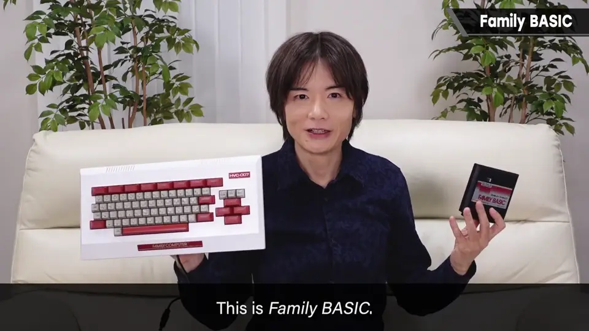
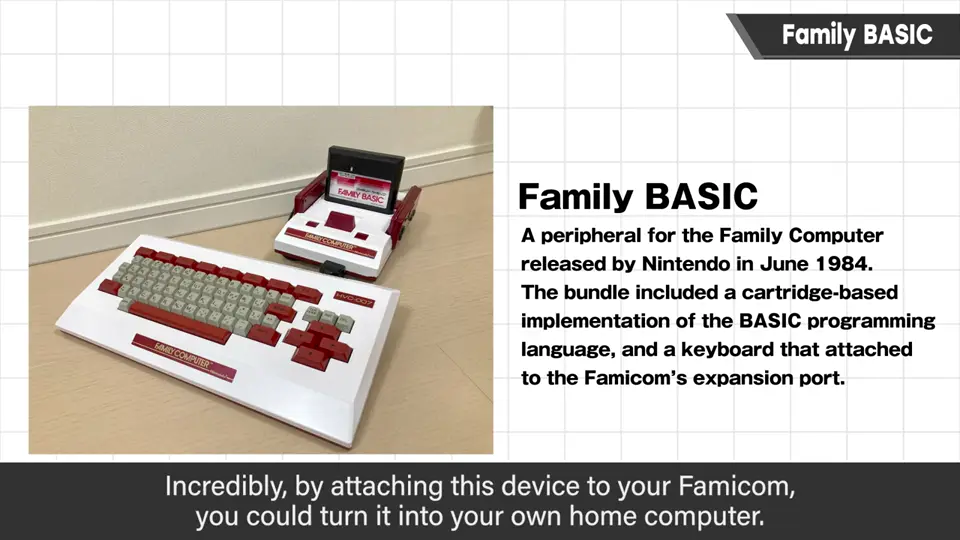
1984 年 6 月，红白机登场约一年后发售。把它对接到红白机上，就能把红白机当作游戏电脑使用。这台实机的白色部分是他自己重新涂装的——和红白机一样，白色部分会随年月变黄。
2. 久违地启动 1:10
时隔 30 多年再启动：一开机它会先问名字、打招呼，还会问要不要算命——为尽快介绍 BASIC，算命就跳过了。
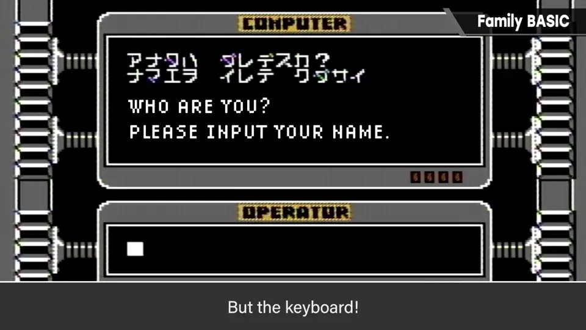
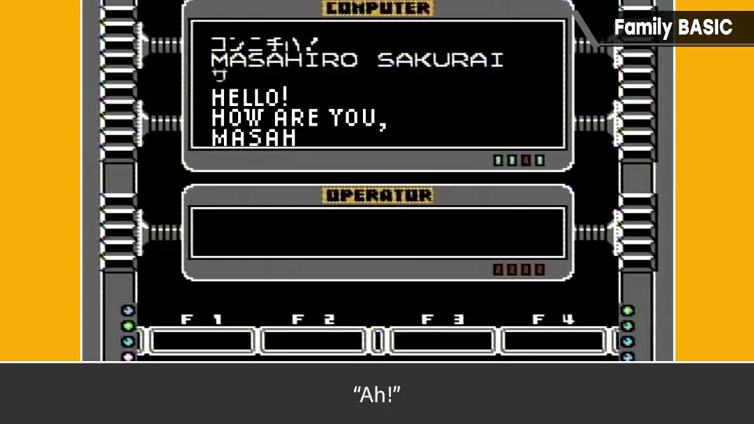
3. HuBASIC 与 6 行 MOVE 程序 3:10
这是 Hudson 参与的 HuBASIC 的红白机定制版，特点是带有各种精灵控制功能。下面这个只有 6 行的程序，运行后马力欧们就往 8 个方向散开。
10 SPRITE ON
20 CGSET 1,0
30 FOR N=0 TO 7
40 DEF MOVE(N)=SPRITE(0,N+1,3,255,0,0)
50 NEXT
60 MOVE 0,1,2,3,4,5,6,7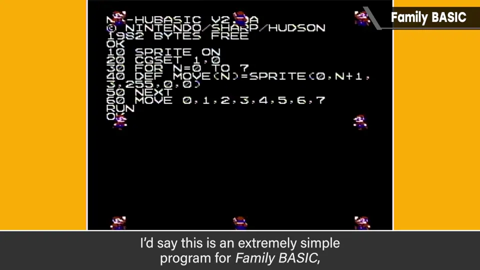
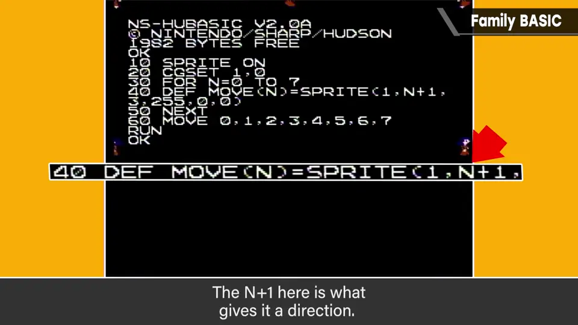
- 10、20 行：打开精灵、设置图形之类，必然要写的部分。
- 30～50 行：N 从 0 到 7 循环到 NEXT。
- DEF MOVE：定义 MOVE 命令的角色。第一个 0 是角色（0 是马力欧，改成 1 就是 Lady）。
- N+1 是方向：0～7 号分配 1～8 的方向；后面是速度、移动距离、优先级（BG 前/后），最后大概是调色板。
4. 角色预设的威力 5:20
有各种角色预设，可以极其简单地使用——这就是关键。如果在普通电脑上从头做，光是画这些点阵图就已经超过这么多程序量了。
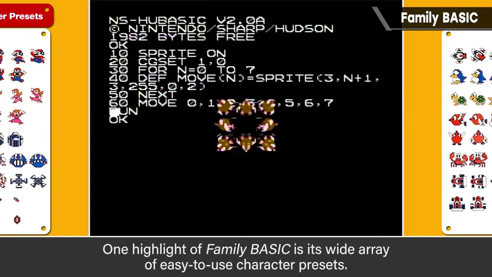
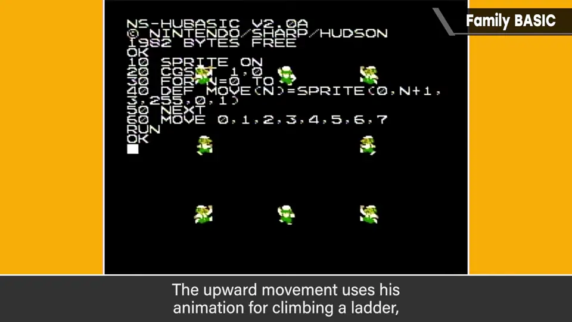
把调色板设为 0 再看马力欧：是《马力欧兄弟》时代的配色，脸是黄的。往上走的是抓梯子的图案，斜向是跳跃，横向是行走，三种图案自动切换。
不过 MOVE 命令手轻的反面是很难用：只能设定 8 个方向，移动之类也不能马上响应。
5. 用 SPRITE 命令做带惯性的操作 7:00
于是他用更实用的 SPRITE 命令写了个程序（一边回忆当年的命令一边写，有粗糙之处请见谅）。可用红白机手柄操作，还带一点惯性。
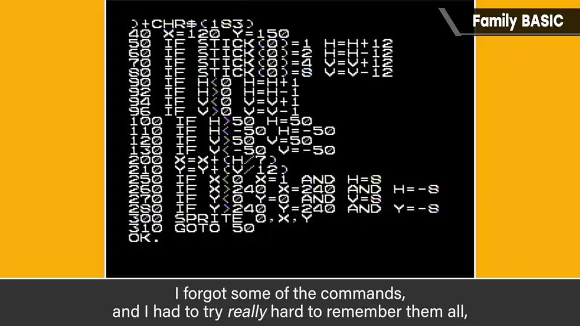
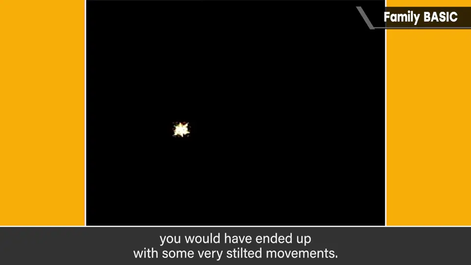
50 IF STICK(0)=1 H=H+12
60 IF STICK(0)=2 H=H-12
70 IF STICK(0)=4 V=V+12
80 IF STICK(0)=8 V=V-12
90 IF H<0 H=H+1
92 IF H>0 H=H-1
94 IF V<0 V=V+1
96 IF V>0 V=V-1
100 IF H>50 H=50
110 IF H<-50 H=-50
120 IF V>50 V=50
130 IF V<-50 V=-50
200 X=X+(H/7)
210 Y=Y+(V/12)
300 SPRITE 0,X,Y
310 GOTO 50能用红白机手柄非常简单地操作这样流畅移动的对象，太棒了。当时在普通电脑上编程玩，只能做出一卡一卡的动作；能让这么快的精灵自由移动，非常好。
6. 背景与属性 8:10
背景可以用另一个工具绘制，但毕竟是红白机，操作略朴素：选好图块和调色板来摆。这是《马力欧兄弟》的地板，换调色板后白色块就成了《大金刚 Jr.》风格的落脚点。
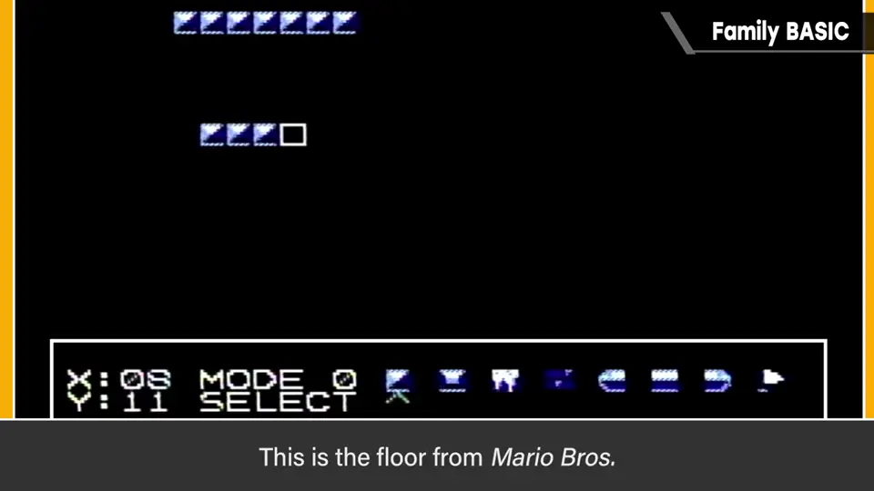
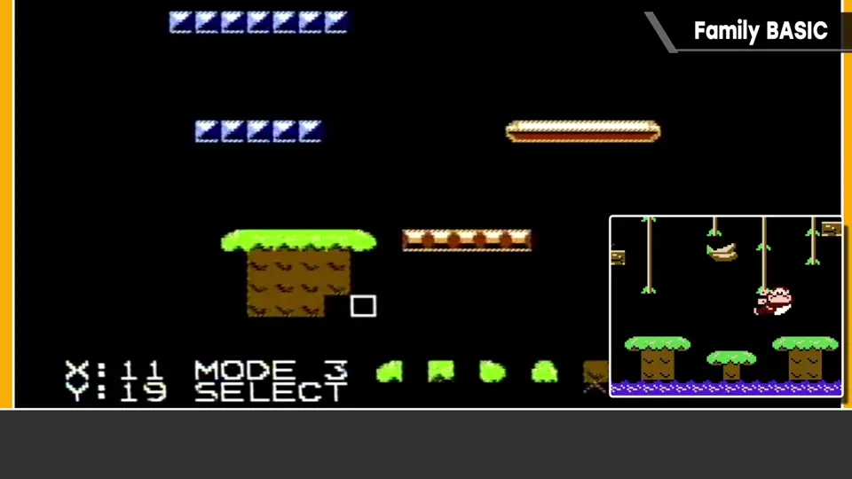
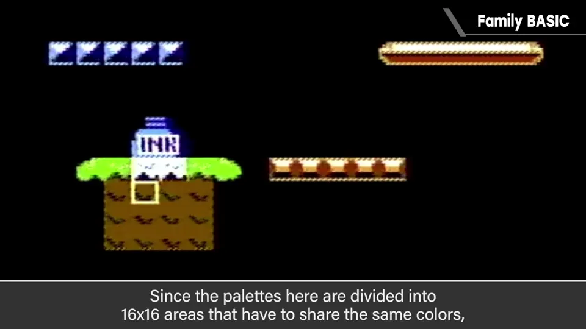
红白机有「属性」问题：调色板以 16×16 为单位统一切换颜色，所以摆放后墨水瓶下半部颜色变了。若想不变色、正确放置，就要把它往上挪一格。
7. 电池备份 9:50
卡带背面能装两节 5 号电池，也就是电池备份，可完整保存程序（不过电池消耗很快，印象中运行也不稳定）。有个滑动开关切换是否用电池供电。
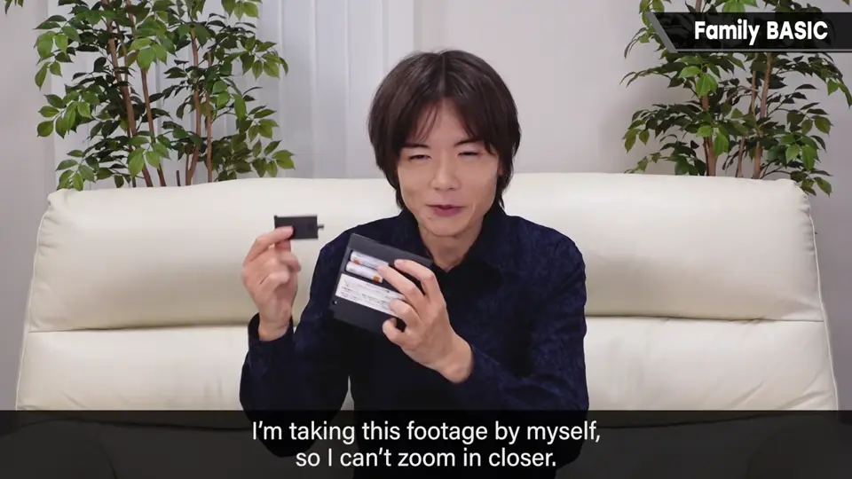
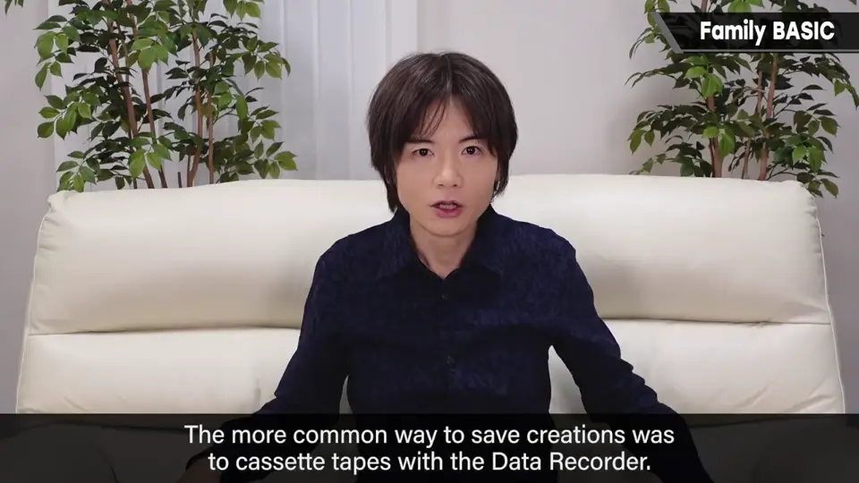
主流的保存方式还是用数据录音机，也就是磁带。据查，首个采用电池备份的游戏软件一般认为是 1986 年 2 月超级卡带视觉版的《屠龙剑》，家庭 BASIC 至少比它更早。
8. 先动手做 11:00
80 年代很多人想靠买电脑进入游戏业，但对中学生的他是高岭之花——整套约 40 万日元。家庭 BASIC 登场后，花半年的零用钱就能买到。
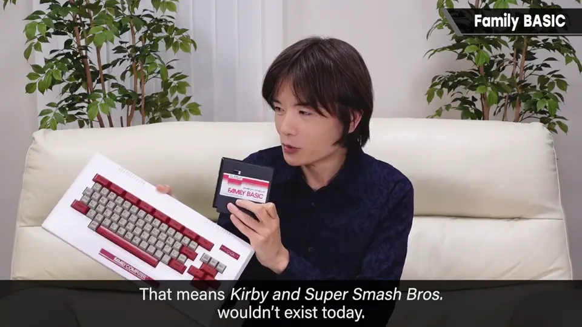
希望这个节目也能成为未来游戏创作者增加的契机。
自测题
1. 家庭 BASIC 的程序容量有多大？
只有 2KB，约 2000 个字。 0:50
2. 6 行 MOVE 程序中，DEF MOVE 里的 N+1 代表什么？
方向——0～7 号分别分配 8 个方向。 5:00
3. MOVE 命令的缺点是什么？
手轻但难用：只能设定 8 个方向，移动等也不能马上响应。 6:25
4. 用 SPRITE 命令写的程序让樱井学到了什么？
惯性等因素如何影响操作手感，并用在了初代《星之卡比》的开发上。 7:50
5. 红白机的「属性」问题是什么？
调色板以 16×16 区块共用，物件放错位置颜色会变，需要挪位对齐。 9:10